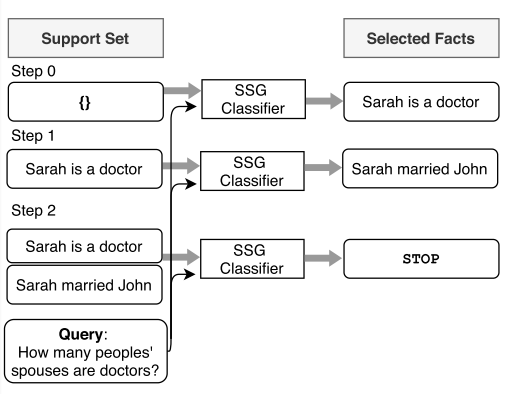

神经数据库（neural templates） 阅读笔记
Table of Contents
今天分享VLDB上的一篇论文, 和数据库, QA等相关, 或许会对自己的未来工作产生影响. 先看一下基本信息
1 Paper Information
Name: Neural Databases Link: https://arxiv.org/abs/2010.06973 year: 2020. published in: VLDB,数据库相关的一个会议 Famous authors or University: 剑桥，Facebook AI
2 简介
作者的讲故事逻辑是这样的: 目前的数据库存在一个特点: 所有的数据都是事先被固定好数据格式(database schema),然后才被使用的. 而作者提出的思路,则是说:没有什么"database schema", 所有的一切都用自然语言文本来描述.
那么，对于这样的一个“数据库”，如何去做它的查询和升级呢？ 论文的思路很简单：使用一个神经网络模型做输入与输出之间的映射，就可以做这些操作了！
换而言之，一个查询的问题,最终成了一个QA问题. 所以不如先简单回顾一下QA在做什么。
2.1 一点相关工作：Question Answering from text.
问答问答，顾名思义，就是问然后答。这样的一个过程本身就类似于一种宽化了的检索。
本人对QA了解极少，此处简单分享一下。一般而言QA主要包括开卷问答和事实验证。 前者主要是给出一个问题，然后给定大量的文档，要求从文档中找到该问题对应的原句回答，因此像是一个摘抄题。而后者，则更像一个选择题。
从题型上来看，本文和后者是较为相似的，但是，本论文所研究的东西或许又更深入了一步，因为这篇论文还需要对找到的事实（facts）进行组合归纳和总结。
当然，QA里面也有一种类似的东西，被称作多跳（multi-hop）问答。 这一类的问答，为了得到最终的答案，需要找到一个支撑事实集合（supporting evidences（facts））。一般而言，支撑集合的获得主要是基于两种思路：
- 将问题分解为几个子问题，之后对每一个问题，都找到答案；
- condition each hop on the previously retrieved documents（不是很懂）
这部分关于多条的思路也被借鉴在了这篇论文中。
2.2 神经数据库是干什么的
先放一张图：

这张图大概展示了用所谓的Neural Query Processor做QA的过程。从中可以看出，其实所谓的处理器本质上就是一个 transformer模型（论文里具体使用的是T5），模型的输入和输出如下：
- 输入： 问题+facts；
- 输出： 结果。
乍一看这一个模型，就能发现很多问题：
问题1：这个模型的数据库存储受限于transformer的长度，这样待检索的事实数量肯定不会太长，因为transformer 一般也不过1024个输入token，怎么就能被用作数据库呢？
回答： 这个模型确实无法获得大量的候选作为输入。为了解决这个问题，这篇工作完全借鉴了信息检索（IR）里面的一些 手段去先从大量的候选facts里得到一个candidate（一般候选集的个数为5，即包含5个事实），然后再在此处进行精细 的查询。
一般而言，对应的检索方法有：
- TFIDF。这个无消多说吧！懂的都懂。这应该是最快同时也是效果最差的方法，作者的实验证明了这个检索方法比起
groundtruth会大大降低目标效果。
- DPR （dense passage retriever）。大概思路是，将每个fact都和输入的query求一个matching score，
之后使用最高的若干个。目前而言，该方法多会对fact的表示进行离线计算和存储，以加快在线query的速度。 具体相关工作可了解:https://zhuanlan.zhihu.com/p/267338799
讲到这里，或许有人会问：这篇论文不就是一个检索的壳子，然后套了一个text2text的模型吗？！ 整体来看，或者说，如果从做QA的角度来看，确实是这样的。但是这篇论文还提供了另外的复杂的点，这也是后面将要介绍 的。
2.3 模型优缺点
对此, 作者的说法是:
NeuralDB, a database system in which updates and queries are given in natural language.
关于这种做法的优点, 作者主要列举如下:
- 不需要预先定义结构;
- 与传统数据库不同, 进行查询或者升级时,不需要再使用一套标准语言, 取而代之的是简单地进行自然语言的描述文本.
- …
同时, 作者也列举了如下几点缺点,分别是:
- 不适合做归纳查询(aggregation queries);
- 受限于transformer模型的长度.
3 模型结构
这篇论文的整体结构可由下图所示：

从图中可以看出，如果我们将检索模块剔除在外（啊，数据库没有数据），这个数据库可以展示如上图所示。 这整个模型结构比之前复杂了一些。变化主要体现在 支持集合生成 模块和 聚合 模块的增加。 现先对这两个模块进行简单的介绍。
3.1 支持集合生成 Support Set Generation
支持集合生成可以简单对照QA里的多跳模型进行理解，同样也是在众多的事实里选择和问题有关的事实。针对这个任务的一个 带有误解性的图例是：

从图中可以看出，Supprot Set的构建本质上是一个增量式的过程。 这个过程同样地也是基于检索进行的。大概流程是：
- 从众多的事实中选择和query相关的若干个事实，按照score从高到低的顺序，挨个进行评估；
- 具体的评估方法是，将query和score导入到一个有监督的二分类器里（该分类器的结果只有两类，
指示是应该添加还是应该停止）；
- 如果评估结果是停止，那么就返回当前的支撑集；如果评估结果是添加，那么将之添加到支撑集，然后回到第1步。
值得注意的是，上述过程同样也可以使用一个回归结果+阈值的方式进行。
下面是论文给出的伪代码（有点奇怪？）：

值得注意的是，在QA中，常常数据集不会有这些中间结果，所以，为了进行训练，构造产生这种中间数据集的方法 也是值得思索的。
论文中给的思路比较简单： 首先使用一个预先经过了检索的全集作为支撑集——这时产生的结果是正确的。然后逐渐地 将matching-score低的元素剔除掉，查看模型的输出结果。当模型输出结果产生变动时，说明剔除了有用的信息， 这时就可以停止剔除并返回该次剔除之前的事实集合作为支撑集了。
相关的伪代码是：

这样一看，好像这里也没有太多创新之处？毕竟获得支撑集合的核心，还是在依赖检索嘛！
3.2 聚合操作 Aggregation
聚合操作，是指需要将检索得到的结果进行一定地整理才能得到最终结果的过程。例如，从一些人物的数据库中找到 年龄最大的那位，就需要查询每个人物的出生日期，然后返回最早的出生日期对应的人。由于最后包含着一个比较，所以 最后一步本质上就是一个聚合操作。再比如，统计多少岁以上的人的数量，等等等等。这类问题对于神经网络而言 其实是比较难的。这篇论文的解决方案比较朴素。
首先，一般的聚合操作主要包括六种：
- no_aggregation;
- count;
- min;
- max;
- argmin;
- argmax。
所以，针对于问题，首先重要的就是先对query进行判定，然后根据分类的结果， 进行对应的映射。

上图反映了几种不同类型对应的准确率。 （Exact match是生成结果和标签完全一致）
4 实验与总结
人懒，就不写实验了。没什么意思，都是自己跟自己比的（当然，也没法跟别人比？）
总结一下，这篇论文写的有点繁杂，但通读一遍，学到了好多知识。希望未来有时间能够再 读一些类似的论文。对这类东西而言整一整头绪实在是太重要了。